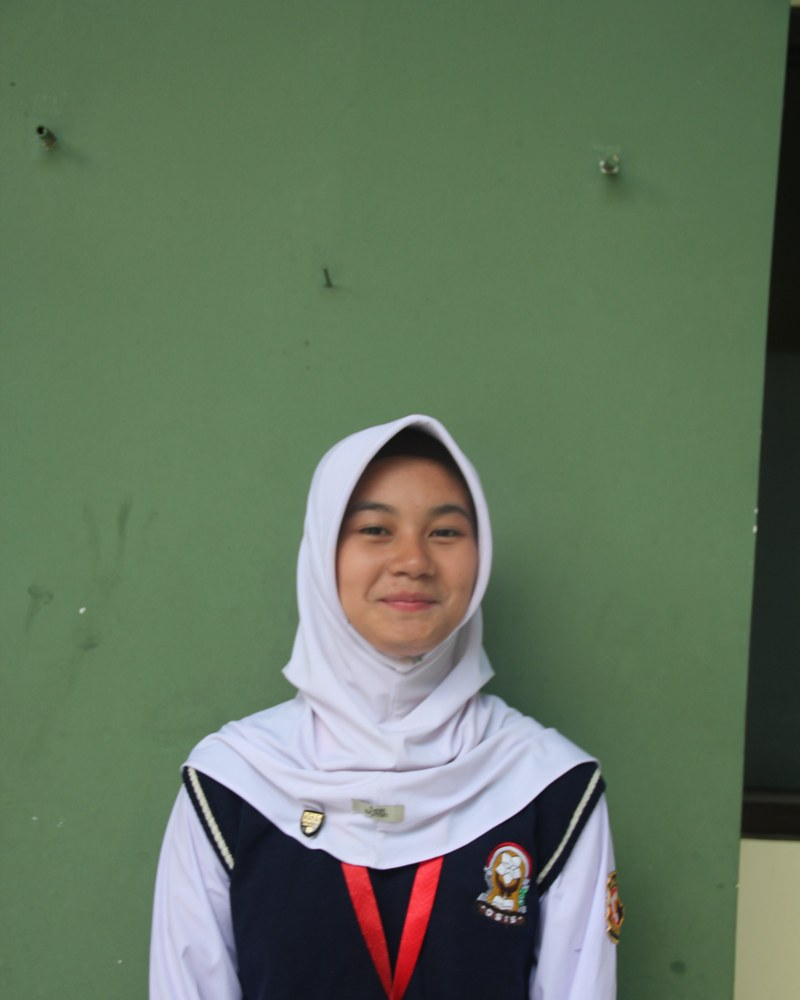
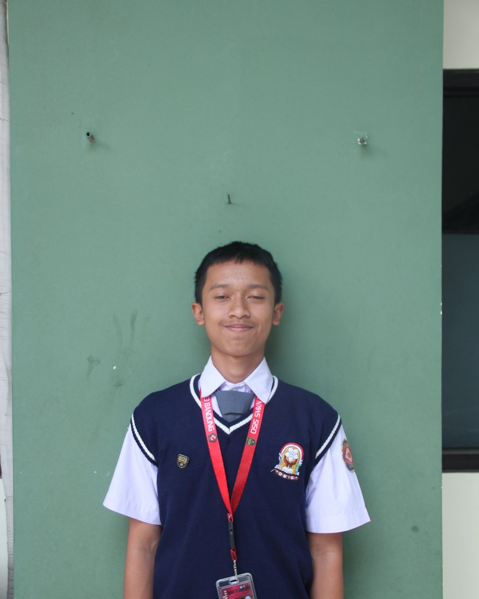
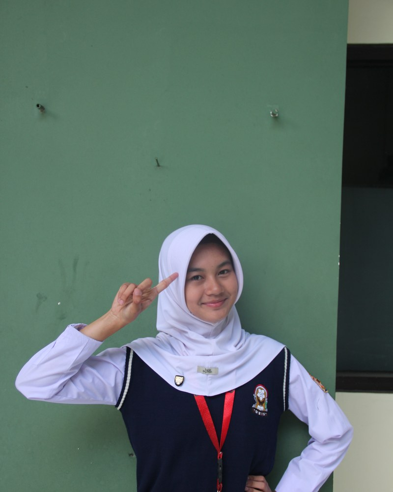
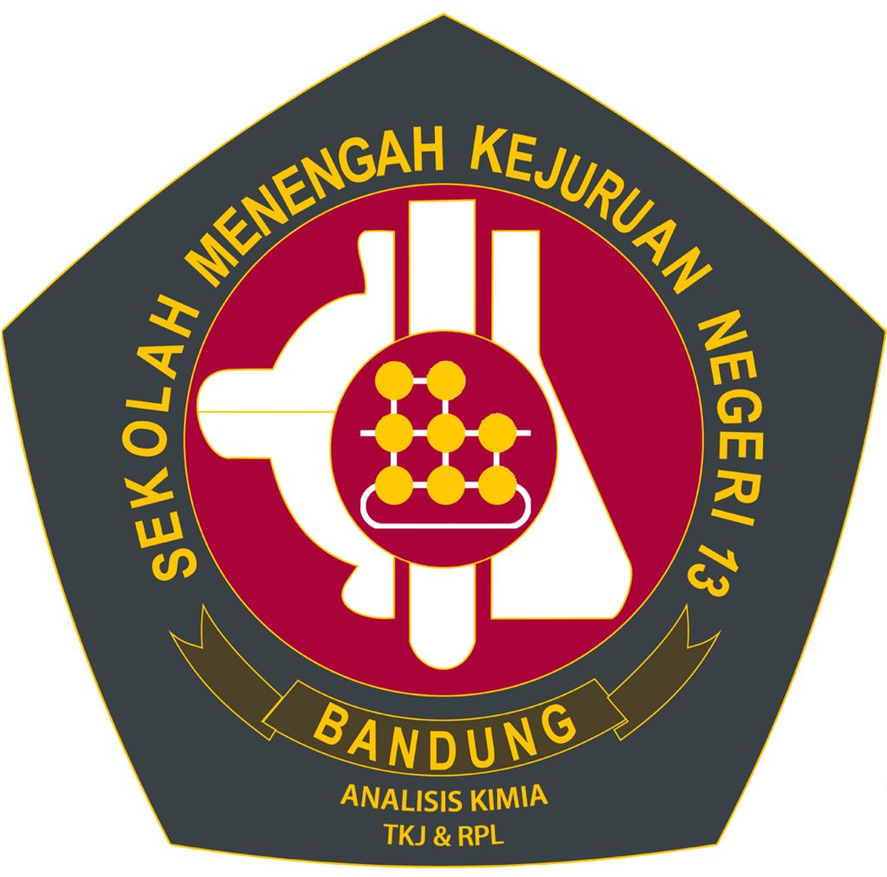

Instagram selalu menaruh postingan baru di kiri atas dan menggeser postingan lama ke kanan. Agar di profil feed Instagram calon berjejer rapi dari kiri ke kanan (01 Salsya • 02 Bima • 03 Loviola), urutan postingnya WAJIB DIBALIK:
Calon 03 (Loviola Amira P.)
Nantinya akan tergeser ke kolom paling kanan.
Calon 02 (Bima Pangestu S.)
Nantinya akan duduk tepat di kolom tengah.
Calon 01 (Salsya Aprilia H.)
Otomatis menempati kolom paling kiri.
🏛️ PRAJA SATYA NAYAKA — Pilketos 2026/2027
🗳️ Kenali Calonmu, Gunakan Hak Suaramu! • 28 Okt 2026



👆 Klik kotak di atas untuk melihat detail carousel calon tersebut di bawah.

- Rasio: 1080 x 1350 px (Gunakan safe zone 1:1 di tengah).
- Logo: SMKN 13 & MPK di pojok kiri atas Slide 1.
- Nomor Urut: Lingkaran emas besar (01 / 02 / 03) di kanan atas.
- Konsistensi Font: League Spartan (Judul) & Poppins (Isi).
VISI PASLON 01 (SALSYA APRILIA HIKMAH): “Mewujudkan Pengurus OSIS SMKN 13 Bandung Sebagai pengurus yang RISE (Reach, Inspire, Serve, Empower) sebagai penggerak perubahan yang inovatif, inspiratif, dan kolaboratif dalam mengembangkan potensi siswa, menciptakan prestasi, serta menghadirkan dampak positif bagi lingkungan sekolah.” MISI PASLON 01: 1. Mengembangkan potensi dan prestasi siswa dalam bidang akademik maupun nonakademik serta memberikan apresiasi atas setiap pencapaian dan kreativitas siswa. 2. Membangun komunikasi dan keterbukaan informasi antara OSIS dan seluruh siswa melalui media informasi yang menarik, informatif, dan mudah diakses. 3. Menumbuhkan kepedulian terhadap lingkungan sekolah melalui kegiatan pemilahan sampah, pengelolaan sampah bernilai guna, dan pembiasaan hidup bersih. 4. Mendorong pemanfaatan teknologi digital sebagai sarana penyebaran informasi, penyampaian aspirasi, dan transparansi kegiatan OSIS. 5. Meningkatkan kualitas kinerja OSIS melalui evaluasi rutin, kerja sama tim, kedisiplinan, dan tanggung jawab dalam menjalankan setiap program kerja. 6. Mewujudkan budaya berpikir kritis dan inovatif dengan melibatkan siswa dalam mengidentifikasi permasalahan di sekolah serta menciptakan solusi yang nyata dan bermanfaat.
PROFIL CALON KETUA OSIS NOMOR URUT 01: Nama Lengkap: Salsya Aprilia Hikmah Kelas: XI-KA-5 SLOGAN CAKETOS: "Satu Langkah Memulai, Satu Komitmen Mengabdi, Satu Tujuan untuk Kemajuan Bersama." PENGALAMAN ORGANISASI: • Komandan PMR SMPN 24 Bandung Periode 2024-2025 • Ketua Angkatan 28 PMR SMKN 13 Bandung • Pengurus PMR SMKN 13 Bandung (Divisi Tata Tertib) • Pengurus OSIS SMKN 13 Bandung (Sekretaris) • Pengurus Wilayah 7 Forum OSIS Jawa Barat Generasi 13 (Divisi Program Manajemen Learning Center) • Pengurus Forum OSIS Jawa Barat Generasi 14 (Wakil Ketua Manajemen Learning Center) PRESTASI: • Juara Harapan 3 Lomba Pertolongan Pertama PMR se-Jawa Barat • Juara Harapan 1 Lomba Clash of Champions PMR se-Jawa Barat
5 PROGRAM KERJA UNGGULAN PASLON 01: 1. Student Achievement & Inspiration Program ini bertujuan mengapresiasi siswa berprestasi di bidang akademik maupun nonakademik sekaligus menginspirasi siswa lainnya. Kegiatannya berupa publikasi artikel di media sosial yang membahas pencapaian, perjalanan, tantangan, cara mengatasinya, serta tips dan trik meraih prestasi. Dengan begitu, prestasi siswa dapat menjadi motivasi dan sumber pembelajaran bagi warga sekolah. 2. PILAH — Peduli Lingkungan, Olah Sampah Gerakan Pemilahan Sampah dan Bank Sampah Sekolah. Program ini bertujuan membangun kebiasaan menjaga kebersihan dan meningkatkan kepedulian siswa terhadap lingkungan melalui pemilahan sampah organik dan anorganik. Kegiatannya meliputi penyediaan tempat sampah terpilah, pengumpulan sampah bernilai guna, serta pengelolaan bank sampah secara berkala untuk didaur ulang atau disalurkan kepada pihak terkait. 3. CONNECT — Connecting Students, Information, and Action Media Digital Informasi dan Transparansi OSIS. Program ini bertujuan menyediakan pusat informasi digital mengenai kegiatan dan program kerja OSIS. Media ini memuat agenda, dokumentasi, informasi kegiatan mendatang, serta perkembangan dan hasil program kerja secara transparan. 4. REFLECT — Review, Evaluate, Improve, and Act Program evaluasi rutin bulanan bagi pengurus OSIS untuk meninjau perkembangan program kerja yang telah direncanakan maupun dilaksanakan. Hasil evaluasi digunakan untuk menentukan langkah perbaikan, menetapkan prioritas, dan meningkatkan koordinasi antarbidang agar program kerja berjalan lebih terarah, efektif, dan bertanggung jawab. 5. AKSI — Ajang Kreativitas dan Solusi Inspiratif Kompetisi Inovasi dan Pemecahan Masalah di Sekolah. Wadah bagi siswa untuk mengembangkan ide kreatif dalam mengatasi permasalahan sekolah, seperti kebersihan, kedisiplinan, kenyamanan belajar, dan hubungan antarsiswa. Ide terbaik akan dikembangkan menjadi aksi nyata melalui kolaborasi siswa, OSIS, dan sekolah.
PANDUAN TEKS SLIDE CANVA - PASLON 01 (SALSYA APRILIA HIKMAH) [SLIDE 1 - COVER DEPAN / FEED GRID] • Tag Atas: CALON KETUA OSIS 2026/2027 • Nomor Urut: 01 • Nama Lengkap: SALSYA APRILIA HIKMAH • Kelas: XI-KA-5 • Slogan di Koran/Kotak: "Satu Langkah Memulai, Satu Komitmen Mengabdi, Satu Tujuan untuk Kemajuan Bersama." • Footer: PRAJA SATYA NAYAKA • Geser Visi & Misi ➔ [SLIDE 2 - PROFIL & REKAM JEJAK] • Header: PROFIL & KAPABILITAS (Slide 2/3) • Judul: Rekam Jejak & Prestasi • Asal Sekolah: SMPN 24 Bandung • Prestasi: - Juara Harapan 3 Lomba Pertolongan Pertama PMR se-Jawa Barat - Juara Harapan 1 Lomba Clash of Champions PMR se-Jawa Barat • Pengalaman Organisasi: - Wakil Ketua Manajemen Learning Center (Forum OSIS Jabar Gen 14) - Pengurus Wilayah 7 Forum OSIS Jabar Gen 13 - Sekretaris OSIS SMKN 13 Bandung - Ketua Angkatan 28 & Pengurus PMR SMKN 13 Bandung - Komandan PMR SMPN 24 Bandung (2024-2025) [SLIDE 3 - GAGASAN & AKSI NYATA] • Header: GAGASAN & AKSI NYATA (Slide 3/3) • Visi Inti: RISE (Reach, Inspire, Serve, Empower) — Penggerak perubahan inovatif, inspiratif, dan kolaboratif. • 5 Program Unggulan: 1. Student Achievement & Inspiration (Artikel edukasi & apresiasi karya) 2. PILAH (Peduli Lingkungan Olah Sampah & Bank Sampah) 3. CONNECT (Media keterbukaan informasi digital OSIS) 4. REFLECT (Evaluasi rutin bulanan pengurus) 5. AKSI (Kompetisi problem-solving & inovasi sekolah) • Footer: Kenali Calonmu, Gunakan Hak Suaramu! • 28 Okt 2026
[KENALI CALONMU: PASLON 01 SALSYA APRILIA HIKMAH] "Satu Langkah Memulai, Satu Komitmen Mengabdi, Satu Tujuan untuk Kemajuan Bersama." Halo Warga Trikora! 👋 Perkenalkan, Kandidat Calon Ketua OSIS SMKN 13 Bandung Nomor Urut 01: 👤 Salsya Aprilia Hikmah (@salsya) 📚 Kelas: XI-KA-5 ✨ VISI: “Mewujudkan Pengurus OSIS SMKN 13 Bandung Sebagai pengurus yang RISE (Reach, Inspire, Serve, Empower) sebagai penggerak perubahan yang inovatif, inspiratif, dan kolaboratif dalam mengembangkan potensi siswa, menciptakan prestasi, serta menghadirkan dampak positif bagi lingkungan sekolah.” 🚀 5 PROGRAM KERJA UNGGULAN: 1. Student Achievement & Inspiration (Apresiasi karya & inspirasi prestasi siswa) 2. PILAH — Peduli Lingkungan, Olah Sampah (Bank sampah sekolah & pemilahan bernilai guna) 3. CONNECT (Pusat transparansi dan keterbukaan informasi digital OSIS) 4. REFLECT (Evaluasi rutin bulanan untuk efektivitas organisasi) 5. AKSI — Ajang Kreativitas dan Solusi Inspiratif (Kompetisi pemecahan masalah sekolah) Geser postingan ini untuk melihat rekam jejak, visi misi lengkap, dan aksi nyata Paslon 01! 👉 🗓️ Hari Pemungutan Suara: Rabu, 28 Oktober 2026 📍 Aula SMKN 13 Bandung Suaramu menentukan masa depan Trikora! #PilketosSMKN13 #PrajaSatyaNayaka #Paslon01 #SalsyaAprilia #MPKSMKN13 #OSISSMKN13 #SuaraSiswaBermakna
VISI PASLON 02 (BIMA PANGESTU SEJATI): “Mewujudkan OSIS sebagai organisasi yang berintegritas, kolaboratif, dan inovatif dalam membentuk peserta didik yang berakhlak mulia, kompeten, serta berdaya suai melalui kepemimpinan yang aspiratif dan aksi nyata yang berkelanjutan.” MISI PASLON 02: 1. Menanamkan nilai akhlak mulia, kedisiplinan, dan tanggung jawab. 2. Mengembangkan potensi, kreativitas, dan prestasi siswa baik akademik maupun non-akademik. 3. Mendorong inovasi dan kemampuan beradaptasi terhadap perkembangan zaman. 4. Menjadikan OSIS sebagai wadah aspirasi dan kolaborasi seluruh siswa. 5. Mewujudkan program kerja yang terencana, berkelanjutan, dan berdampak nyata.
PROFIL CALON KETUA OSIS NOMOR URUT 02: Nama Lengkap: Bima Pangestu Sejati Kelas: XI-KA-6 SLOGAN CAKETOS: "Bersama 2 Wujudkan Aksi Nyata" (Slogan Orasi: "2 Kali Berpikir, 2 Kali Mempertimbangkan, 2 Kali Aksi Nyata!") PENGALAMAN ORGANISASI: • Ketua Umum Rohis SMPN 35 Bandung • Anggota Sekbid 1 OSIS SMPN 35 Bandung PRESTASI: • Juara Harapan 1 Membaca dan Menulis Aksara Sunda Tingkat Kota Bandung • Juara Umum 2 Lomba Tingkat 2 Pramuka Penggalang • Juara 1 MTQ Tingkat Pesantren • Juara 3 Pidato Bahasa Arab Tingkat Kecamatan • Juara 2 Lomba Gerakan Sholat Tingkat Kota Bandung
PROGRAM KERJA UNGGULAN PASLON 02: EXPOKASI (Expo Kompetisi dan Kreasi) • Konsep: Menggabungkan pameran hasil karya inovasi siswa dengan demonstrasi keterampilan dari setiap program keahlian di SMKN 13 Bandung. • Waktu Pelaksanaan: Dilakukan secara berkala setiap 6 bulan sekali (1 kali per semester). • Tujuan: Menjadi panggung apresiasi karya kejuruan, festival unjuk bakat lintas jurusan, serta melatih daya saing dan jiwa kewirausahaan siswa SMKN 13 Bandung.
PANDUAN TEKS SLIDE CANVA - PASLON 02 (BIMA PANGESTU SEJATI) [SLIDE 1 - COVER DEPAN / FEED GRID] • Tag Atas: CALON KETUA OSIS 2026/2027 • Nomor Urut: 02 • Nama Lengkap: BIMA PANGESTU SEJATI • Kelas: XI-KA-6 • Slogan di Koran/Kotak: "Bersama 2 Wujudkan Aksi Nyata" • Footer: PRAJA SATYA NAYAKA • Geser Visi & Misi ➔ [SLIDE 2 - PROFIL & REKAM JEJAK] • Header: PROFIL & KAPABILITAS (Slide 2/3) • Judul: Rekam Jejak & Prestasi • Asal Sekolah: SMPN 35 Bandung • Prestasi: - Juara Harapan 1 Membaca & Menulis Aksara Sunda Kota Bandung - Juara Umum 2 Lomba Tingkat 2 Pramuka Penggalang - Juara 1 MTQ Tingkat Pesantren - Juara 3 Pidato Bahasa Arab Tingkat Kecamatan - Juara 2 Gerakan Sholat Kota Bandung • Pengalaman Organisasi: - Ketua Umum Rohis SMPN 35 Bandung - Anggota Sekbid 1 OSIS SMPN 35 Bandung [SLIDE 3 - GAGASAN & AKSI NYATA] • Header: GAGASAN & AKSI NYATA (Slide 3/3) • Visi Inti: "Mewujudkan OSIS berintegritas, kolaboratif, dan inovatif dalam membentuk peserta didik berakhlak mulia, kompeten, dan berdaya suai." • 5 Misi Unggulan: 1. Akhlak mulia, kedisiplinan & tanggung jawab 2. Pengembangan potensi & prestasi akademik/non-akademik 3. Mendorong inovasi & adaptasi perkembangan zaman 4. Wadah aspirasi & kolaborasi seluruh siswa 5. Program kerja terencana, berkelanjutan & berdampak nyata • Program Unggulan: - EXPOKASI (Expo Kompetisi & Kreasi Kejuruan Siswa SMKN 13 per Semester) • Footer: Kenali Calonmu, Gunakan Hak Suaramu! • 28 Okt 2026
[KENALI CALONMU: PASLON 02 BIMA PANGESTU SEJATI] "Bersama 2 Wujudkan Aksi Nyata!" "2 Kali Berpikir, 2 Kali Mempertimbangkan, 2 Kali Aksi Nyata!" Halo Warga Trikora! 👋 Perkenalkan, Kandidat Calon Ketua OSIS SMKN 13 Bandung Nomor Urut 02: 👤 Bima Pangestu Sejati (@bima) 📚 Kelas: XI-KA-6 ✨ VISI: “Mewujudkan OSIS sebagai organisasi yang berintegritas, kolaboratif, dan inovatif dalam membentuk peserta didik yang berakhlak mulia, kompeten, serta berdaya suai melalui kepemimpinan yang aspiratif dan aksi nyata yang berkelanjutan.” 🚀 PROGRAM KERJA UNGGULAN: 🎯 EXPOKASI (Expo Kompetisi dan Kreasi) Festival pameran kejuruan terpadu dan demonstrasi keterampilan dari setiap program keahlian yang diadakan berkala tiap semester sebagai wadah kreasi nyata seluruh jurusan! Geser postingan ini untuk melihat rekam jejak, visi misi lengkap, dan aksi nyata Paslon 02! 👉 🗓️ Hari Pemungutan Suara: Rabu, 28 Oktober 2026 📍 Aula SMKN 13 Bandung Suaramu menentukan masa depan Trikora! #PilketosSMKN13 #PrajaSatyaNayaka #Paslon02 #BimaPangestu #MPKSMKN13 #OSISSMKN13 #SuaraSiswaBermakna
VISI PASLON 03 (LOVIOLA AMIRA PRAMESWARI): “Menjadikan OSIS SMKN 13 Bandung wadah yang Aktif, Kreatif, dan Solutif untuk mewujudkan siswa berprestasi dan berkarakter.” MISI PASLON 03: 1. Menyelenggarakan kegiatan kreatif di bidang akademik maupun non-akademik. 2. Membangun komunikasi yang solid antara OSIS, MPK, ekskul, dan pihak sekolah. 3. Menumbuhkan kedisiplinan, kepemimpinan, dan kepedulian sosial siswa. 4. Memanfaatkan media digital untuk publikasi, transparansi, apresiasi karya dan juga kegiatan OSIS. 5. Menjaga profesionalisme, kejujuran, dan tanggung jawab dalam berorganisasi.
PROFIL CALON KETUA OSIS NOMOR URUT 03: Nama Lengkap: Loviola Amira Prameswari Kelas: XI-KA-6 SLOGAN CAKETOS: "Stop scrolling, start voting: Pilih Nomor 3 for real shining!" PENGALAMAN ORGANISASI: • Ketua Angkatan PASKIBRA MTs Cijawura Periode 2024-2025 • Ketua Angkatan PASKIBRA SMKN 13 Bandung Periode 2026-2027 • Pengurus OSIS SMKN 13 Bandung (Sekbid 2) • PASKIBRA Kota Bandung (Kebidangan Bina Lapangan) PRESTASI: • Juara Prasetya Muda 3 Pra Madya Lomba Regu Pengibar Bendera Se-Bandung Raya • Juara Prasetya Muda 3 Madya Lomba Regu Pengibar Bendera Se-Jawa Barat
PROGRAM KERJA UNGGULAN PASLON 03: RANGKUL 13 (Misi 2 & Visi Solutif) Ruang Kolaborasi, Komunikasi Solid, dan Penyaluran Aspirasi Tanpa Sekat. • Bentuk Kegiatan: Diskusi Ketua Organisasi & Ekskul: Pertemuan rutin bulanan antara OSIS, MPK, dan seluruh Ketua Ekstrakurikuler untuk menyelaraskan kalender kegiatan sekolah, membagi penggunaan sarana/fasilitas, dan menyelesaikan kendala kegiatan bersama-sama.
PANDUAN TEKS SLIDE CANVA - PASLON 03 (LOVIOLA AMIRA PRAMESWARI) [SLIDE 1 - COVER DEPAN / FEED GRID] • Tag Atas: CALON KETUA OSIS 2026/2027 • Nomor Urut: 03 • Nama Lengkap: LOVIOLA AMIRA PRAMESWARI • Kelas: XI-KA-6 • Slogan di Koran/Kotak: "Stop scrolling, start voting: Pilih Nomor 3 for real shining!" • Footer: PRAJA SATYA NAYAKA • Geser Visi & Misi ➔ [SLIDE 2 - PROFIL & REKAM JEJAK] • Header: PROFIL & KAPABILITAS (Slide 2/3) • Judul: Rekam Jejak & Prestasi • Asal Sekolah: MTs Cijawura • Prestasi: - Juara Prasetya Muda 3 Pra Madya Lomba Regu Pengibar Bendera Bandung Raya - Juara Prasetya Muda 3 Madya Lomba Regu Pengibar Bendera Jawa Barat • Pengalaman Organisasi: - Ketua Angkatan PASKIBRA SMKN 13 Bandung (2026-2027) - Pengurus OSIS SMKN 13 Bandung (Sekbid 2) - PASKIBRA Kota Bandung (Kebidangan Bina Lapangan) - Ketua Angkatan PASKIBRA MTs Cijawura (2024-2025) [SLIDE 3 - GAGASAN & AKSI NYATA] • Header: GAGASAN & AKSI NYATA (Slide 3/3) • Visi Inti: "Menjadikan OSIS SMKN 13 Bandung wadah yang Aktif, Kreatif, dan Solutif untuk mewujudkan siswa berprestasi dan berkarakter." • 5 Misi Unggulan: 1. Kegiatan kreatif akademik & non-akademik 2. Komunikasi solid OSIS, MPK, Ekskul & Sekolah 3. Kedisiplinan, kepemimpinan & kepedulian sosial 4. Media digital publikasi & transparansi karya 5. Profesionalisme, kejujuran & tanggung jawab • Program Unggulan: - RANGKUL 13 (Ruang Kolaborasi & Pertemuan Bulanan OSIS, MPK, dan Seluruh Ketua Ekskul) • Footer: Kenali Calonmu, Gunakan Hak Suaramu! • 28 Okt 2026
[KENALI CALONMU: PASLON 03 LOVIOLA AMIRA PRAMESWARI] "Stop scrolling, start voting: Pilih Nomor 3 for real shining!" Halo Warga Trikora! 👋 Perkenalkan, Kandidat Calon Ketua OSIS SMKN 13 Bandung Nomor Urut 03: 👤 Loviola Amira Prameswari (@loviola) 📚 Kelas: XI-KA-6 ✨ VISI: “Menjadikan OSIS SMKN 13 Bandung wadah yang Aktif, Kreatif, dan Solutif untuk mewujudkan siswa berprestasi dan berkarakter.” 🚀 PROGRAM KERJA UNGGULAN: 🤝 RANGKUL 13 (Ruang Kolaborasi Bulanan) Forum temu rutin bulanan antara pengurus OSIS, MPK, dan seluruh Ketua Ekstrakurikuler untuk menyelaraskan agenda kegiatan, berbagi pemakaian fasilitas, dan menyelesaikan kendala bersama! Geser postingan ini untuk melihat rekam jejak, visi misi lengkap, dan aksi nyata Paslon 03! 👉 🗓️ Hari Pemungutan Suara: Rabu, 28 Oktober 2026 📍 Aula SMKN 13 Bandung Suaramu menentukan masa depan Trikora! #PilketosSMKN13 #PrajaSatyaNayaka #Paslon03 #LoviolaAmira #MPKSMKN13 #OSISSMKN13 #SuaraSiswaBermakna
Instagram menampilkan foto dalam rasio 4:5 (1080 x 1350 px) saat orang scroll di beranda. Tetapi saat orang membuka profil @mpksmkn13bdg, foto dipotong otomatis menjadi bujur sangkar 1:1 (1080 x 1080 px) tepat di tengah kanvas!
Kaidah Layout Canva:
- Area Atas (135 px): Aman untuk penempatan logo sekolah & MPK atau ornamen kecil.
- Area Tengah (1080 px): Ini area terpenting. Kepala/mata kandidat, teks nama, dan badge nomor urut WAJIB berada di dalam area ini agar saat tampil di grid feed profil, wajah tidak terpotong lehernya!
- Area Bawah (135 px): Aman untuk footer teks geser (Swipe ➔), tema Pilketos, atau tanggal pemilihan.